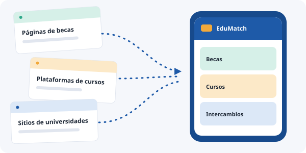

¿Qué es EduMatch?
Una aplicación móvil que centraliza becas, cursos, programas de intercambio e instituciones para que los estudiantes encuentren y soliciten oportunidades de estudio en un solo lugar.
El problema
Hoy las convocatorias de becas, los cursos y los programas de intercambio están repartidos en sitios web de universidades, entidades y plataformas distintas. Cada una tiene su propio formato, sus fechas y sus requisitos.
Para un estudiante, encontrar lo que le sirve significa revisar muchas páginas, comparar a mano y, con frecuencia, enterarse tarde de que la convocatoria ya cerró.
La solución
EduMatch reúne todo en una sola aplicación. El estudiante crea su cuenta, explora las oportunidades organizadas por tipo, consulta quién las ofrece y se postula desde el mismo lugar.

¿Qué se puede hacer en EduMatch?

-
schoolBuscar becasConsulta apoyos económicos con su porcentaje de cobertura, requisitos y fecha de cierre.
-
play_circleEncontrar cursosMira cursos cortos con su duración, modalidad (virtual, presencial o mixta) y fecha de inicio.
-
publicConocer programas de intercambioDescubre semestres de movilidad y pasantías en otras ciudades y países.
-
account_balanceConocer las institucionesCada oportunidad muestra la universidad o entidad que la ofrece.
-
assignment_turned_inPostularte y hacer seguimientoEnvía tu postulación desde la aplicación y consulta en qué estado va.
¿Para quién es?
Estudiantes de bachillerato
Que quieren saber a qué universidad o programa pueden aspirar y cómo financiarlo.
Estudiantes de técnico, tecnólogo y pregrado
Que buscan una beca, un curso para complementar su carrera o una experiencia en el exterior.
Instituciones educativas
Que quieren dar a conocer sus becas, cursos y programas a más estudiantes.